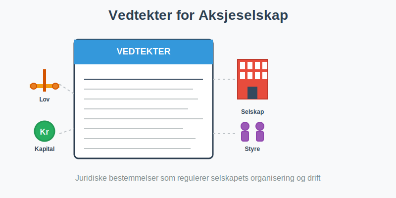
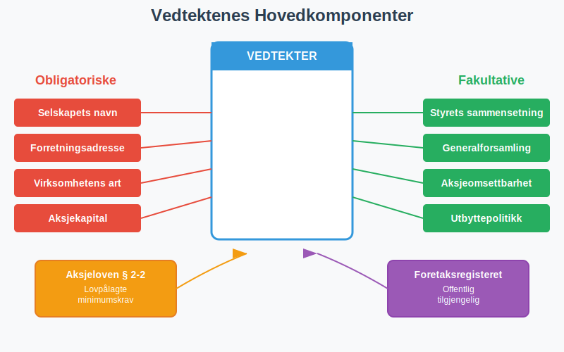
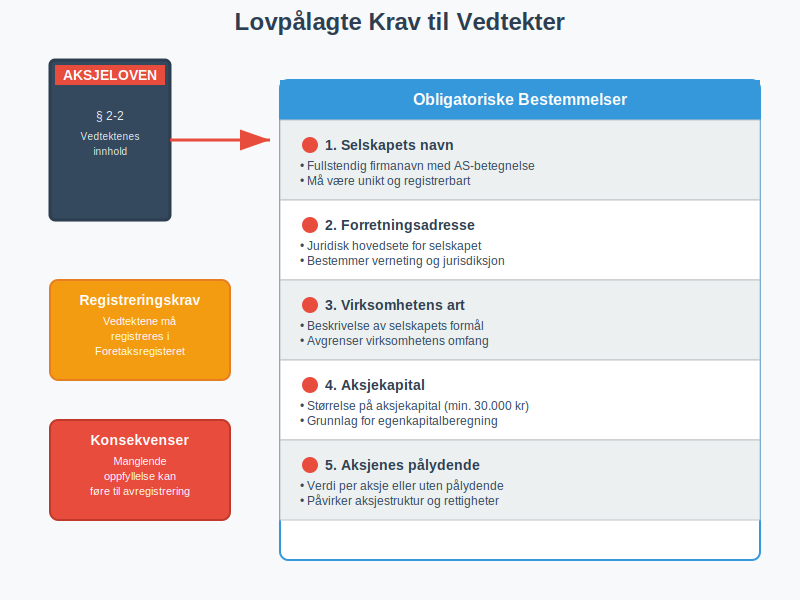
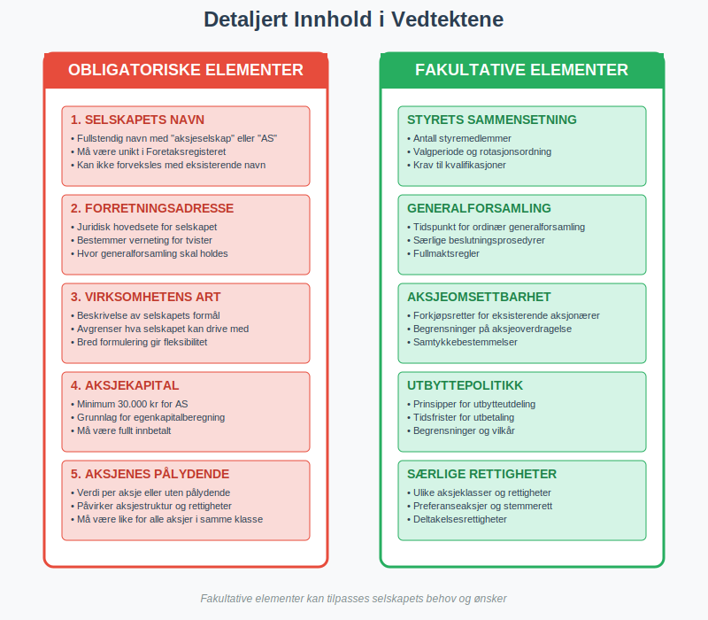
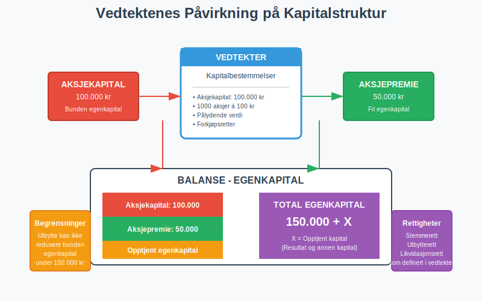
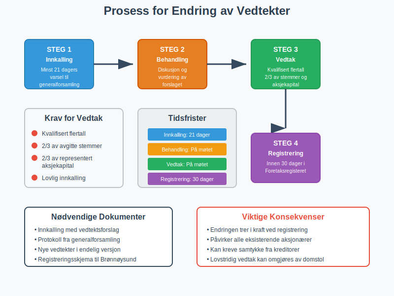
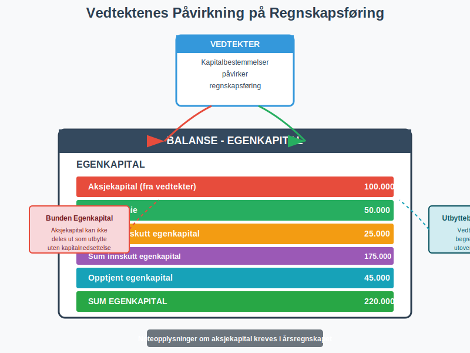
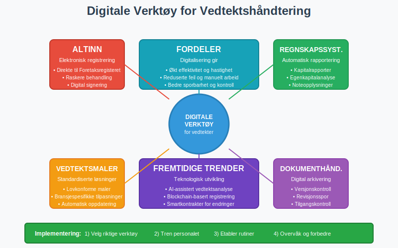
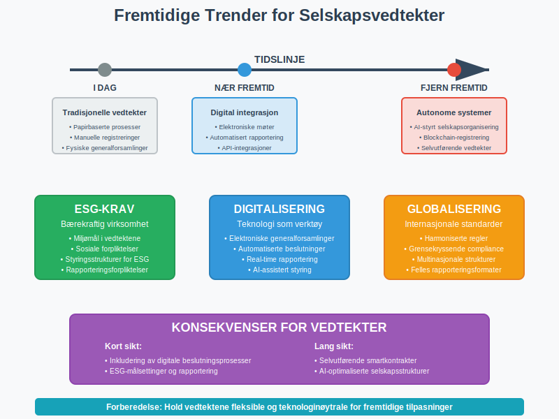

Vedtekter for aksjeselskap er obligatoriske juridiske bestemmelser som regulerer hvordan et aksjeselskap (AS) skal organiseres og drives. Vedtektene fungerer som selskapets grunnlov og må utarbeides i henhold til aksjeloven. De definerer selskapets formål, aksjekapital, styringsstruktur og andre fundamentale forhold som påvirker både regnskapsføring og daglig drift.

Hva er Vedtekter?
Vedtekter er de grunnleggende reglene som styrer et aksjeselskap. De må være skriftlige og inneholde obligatoriske bestemmelser som kreves av aksjeloven, samt eventuelle fakultative bestemmelser som aksjonærene ønsker å inkludere.
Vedtektene har juridisk bindende kraft for selskapet, styret, aksjonærene og tredjeparter. De registreres i Foretaksregisteret og er offentlig tilgjengelige, noe som gir transparent informasjon om selskapets organisering.

Lovpålagte Krav til Vedtekter
Aksjeloven § 2-2 krever at vedtektene inneholder følgende obligatoriske bestemmelser:
| Bestemmelse | Beskrivelse | Betydning |
|---|---|---|
| Selskapets navn | Fullstendig firmanavn med AS-betegnelse | Identifiserer selskapet juridisk |
| Forretningsadresse | Hvor selskapet har sitt hovedsete | Bestemmer verneting og jurisdiksjon |
| Virksomhetens art | Beskrivelse av selskapets formål og aktiviteter | Avgrenser hva selskapet kan drive med |
| Aksjekapital | Størrelse på aksjekapital og pålydende | Grunnlag for egenkapital |
| Aksjenes pålydende | Verdi per aksje eller at aksjer ikke har pålydende | Påvirker aksjestruktur og rettigheter |

Innhold i Vedtektene
Obligatoriske Bestemmelser
Selskapets navn må være unikt og inneholde “aksjeselskap” eller forkortelsen “AS”. Navnet registreres i Foretaksregisteret og kan ikke forveksles med eksisterende selskaper.
Forretningsadressen angir hvor selskapet har sitt juridiske hovedsete. Dette påvirker hvilket tingrett som har jurisdiksjon og hvor generalforsamling skal avholdes.
Virksomhetens art beskriver hva selskapet skal drive med. En bred formulering gir fleksibilitet, mens en snever formulering kan kreve vedtektsendring ved utvidelse av virksomheten.

Fakultative Bestemmelser
Vedtektene kan også inneholde valgfrie bestemmelser som:
- Styrets sammensetning og valgperiode
- Generalforsamlingens myndighet utover lovens minimum
- Aksjenes omsettbarhet og forkjøpsretter. Dette henger tett sammen med føringen av aksjeeierboken, og detaljerte regler for salg og overføring av aksjer reguleres ofte i en aksjonæravtale.
- Utbyttepolitikk og distribusjonsbegrensninger
- Særlige rettigheter for ulike aksjeklasser
Vedtektenes Rolle i Selskapsorganiseringen
Styringsstruktur
Vedtektene definerer hvordan selskapet skal styres og organiseres. De fastsetter styrets sammensetning, generalforsamlingens myndighet og beslutningsprosesser.
Dette påvirker direkte regnskapsansvaret og hvordan internkontroll skal organiseres. Tydelige ansvarsforhold i vedtektene bidrar til bedre god regnskapsskikk.
Kapitalstruktur
Vedtektene regulerer selskapets kapitalstruktur gjennom bestemmelser om:
- Aksjekapital og aksjefordeling
- Rettigheter knyttet til ulike aksjeklasser
- Prosedyrer for kapitalforhøyelse
- Begrensninger på utbytte

Endring av Vedtekter
Beslutningsprosess
Endring av vedtekter krever kvalifisert flertall i generalforsamlingen, normalt to tredjedeler av både avgitte stemmer og representert aksjekapital. Aksjonærer kan koordinere sin stemmegivning ved slike viktige vedtektsendringer gjennom en aksjonæravtale for å sikre enhetlig beslutningstagning. Prosessen omfatter:
- Innkalling til generalforsamling med minst 21 dagers varsel
- Behandling av vedtektsendringen i generalforsamlingen
- Vedtak med kvalifisert flertall
- Registrering i Foretaksregisteret innen 30 dager

Registrering og Ikrafttredelse
Vedtektsendringer må registreres i Foretaksregisteret for å få juridisk virkning. Endringen trer i kraft når den er registrert, med mindre annet er bestemt i vedtaket.
Enkelte endringer, som økning av aksjekapital, krever også at kapitaltilskuddet er innbetalt før registrering kan skje.
Regnskapsmessige Konsekvenser
Påvirkning på Regnskapsføring
Vedtektene påvirker regnskapsføring på flere måter:
- Aksjekapital føres som egenkapital i balansen
- Aksjepremie føres separat ved emisjon over pålydende
- Bunden egenkapital påvirkes av aksjekapitalens størrelse
- Utbyttebegrensninger følger av vedtektenes kapitalbestemmelser

Rapportering og Noteopplysninger
Årsregnskapet må inneholde opplysninger om:
- Aksjekapitalens størrelse og sammensetning
- Endringer i aksjekapital i løpet av året
- Begrensninger i utdeling av utbytte
- Særlige rettigheter knyttet til aksjeklasser
Praktiske Råd for Etablering
Utforming av Vedtekter
Ved etablering av aksjeselskap bør du vurdere:
- Bred formulering av virksomhetens art for fremtidig fleksibilitet
- Praktisk aksjekapital som dekker oppstartsbehovene
- Tydelige styringsregler for å unngå fremtidige konflikter
- Forkjøpsretter for å kontrollere eiersammensetningen
Profesjonell Bistand
Det anbefales å bruke advokat eller regnskapsfører ved utarbeidelse av vedtekter. De kan sikre at:
- Alle lovkrav er oppfylt
- Vedtektene er tilpasset din virksomhet
- Skattemessige konsekvenser er vurdert
- Fremtidige endringsbehov er forutsett

Digitale Verktøy og Ressurser
Elektronisk Registrering
Altinn tilbyr elektronisk innsending av vedtektsendringer til Foretaksregisteret. Dette forenkler prosessen og reduserer behandlingstiden.
Mange regnskapssystemer kan også generere nødvendige rapporter basert på vedtektenes kapitalbestemmelser.
Vedlikehold og Oppdatering
Vedtektene bør gjennomgås jevnlig for å sikre at de fortsatt er hensiktsmessige. Ved større endringer i virksomheten eller lovverket kan oppdatering være nødvendig.

Fremtidige Utviklinger
Lovutvikling
Aksjeloven gjennomgås jevnlig, og endringer kan påvirke kravene til vedtekter. Det er viktig å holde seg oppdatert på lovutvikling som kan kreve vedtektsendringer.
Digitalisering
Økt digitalisering kan føre til elektroniske generalforsamlinger og digitale beslutningsprosesser, noe som kan kreve tilpasninger i vedtektene.
ESG-krav (Environmental, Social, Governance) kan også påvirke hvordan vedtekter utformes for å sikre bærekraftig virksomhet.

Konklusjon
Vedtekter for aksjeselskap er fundamentale juridiske dokumenter som regulerer selskapets organisering og drift. De påvirker alt fra regnskapsføring til styringsansvar og må utarbeides nøye for å sikre effektiv selskapsorganisering.
Ved å forstå vedtektenes rolle og krav kan du sikre at ditt aksjeselskap opererer innenfor lovens rammer og har en solid juridisk struktur for fremtidig vekst og utvikling.